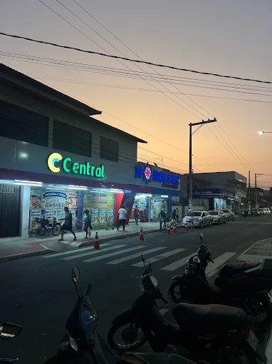

COMÉRCIO LOCAL
O que R$ 100 compram no Supermercado Noroeste?
Uma reportagem sobre o poder de compra e a experiência de quem faz compras no comércio da região.
Ler reportagemNotícias, histórias e informações da comunidade, com espaço para a voz dos moradores.
Informações e acontecimentos da nossa comunidade.

Uma reportagem sobre o poder de compra e a experiência de quem faz compras no comércio da região.
Ler reportagemA Rede Valeriana abre espaço para moradores compartilharem suas histórias, opiniões e ideias.
Conhecer o projetoAjude a mostrar o que acontece em Nova Almeida. Sua sugestão pode virar uma reportagem.
Enviar sugestãoNosso objetivo é ouvir moradores, conhecer iniciativas locais e mostrar os acontecimentos que fazem parte do dia a dia de Nova Almeida.
Sugira uma entrevistaConfira as condições atuais e a previsão dos próximos dias.
Carregando a previsão do tempo...
Carregando previsão...
Dados meteorológicos: Open-Meteo. A previsão pode mudar ao longo do dia.
A Rede Valeriana é um projeto de comunicação comunitária que busca registrar acontecimentos, ouvir moradores e divulgar histórias, iniciativas e assuntos de interesse público de Nova Almeida e região.
Acreditamos que a informação aproxima as pessoas e ajuda a comunidade a conhecer melhor o lugar onde vive.
Faça parte do projetoConhece um acontecimento, um projeto interessante, um evento ou uma história que merece ser conhecida? Envie sua sugestão para a Rede Valeriana.
Enviar sugestão de notícia →O envio de uma sugestão não garante sua publicação. As informações serão avaliadas antes de virar reportagem.